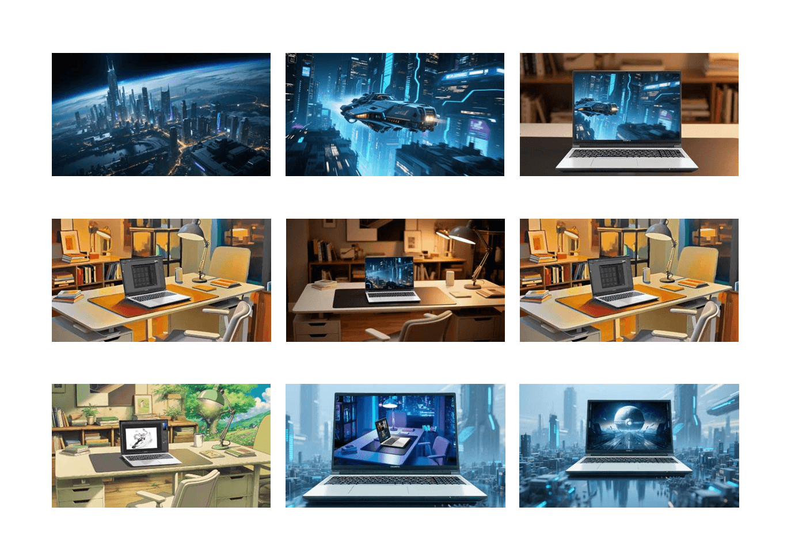
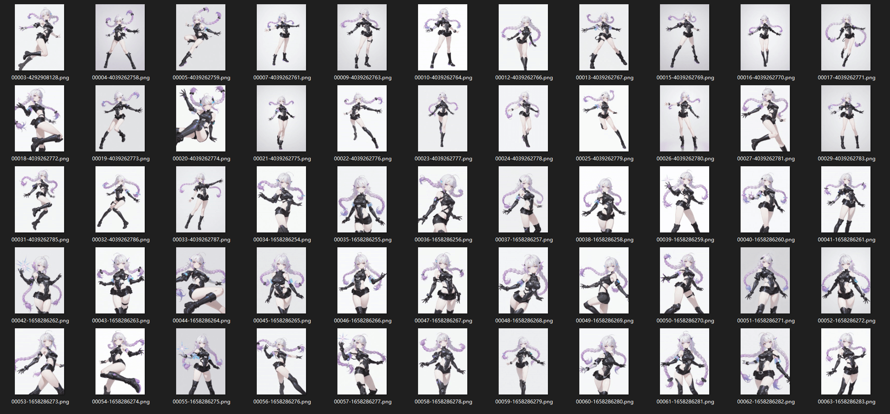
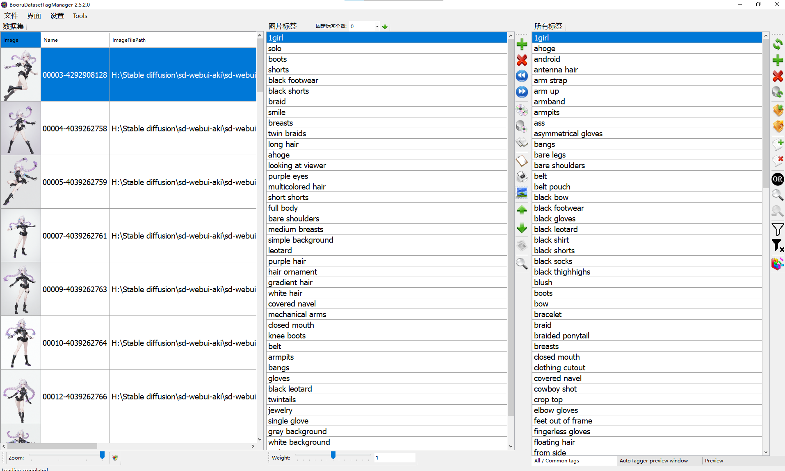
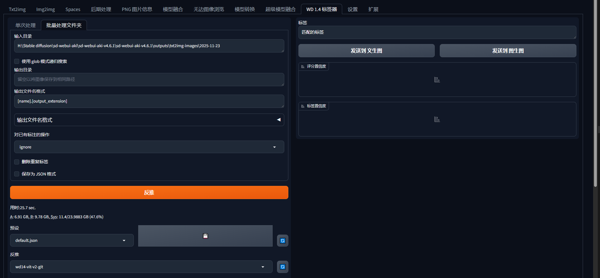
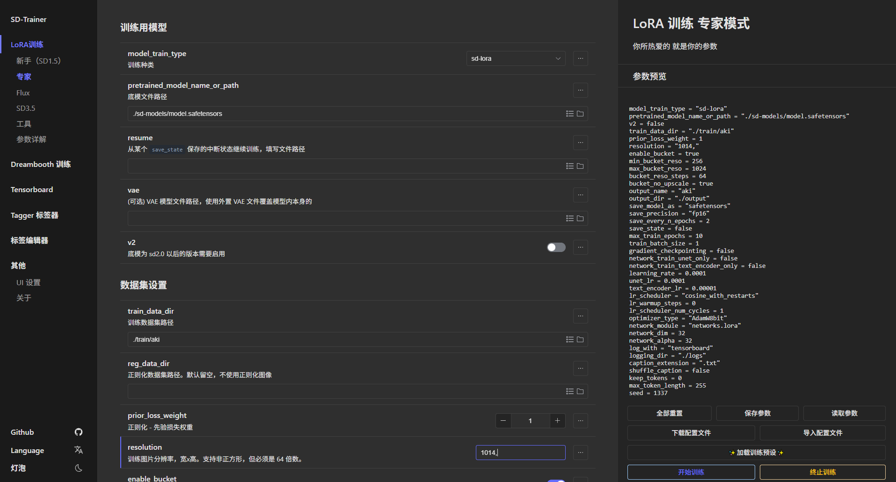

隐域穿梭 · 七彩虹
项目背景 Concept
本项目为七彩虹 (Colorful) 品牌打造的 AI 视觉广告短片。以“现实与虚拟的穿越”为叙事线索，呈现产品在未来语境下的科技感与想象力。
视觉叙事 Visual Narrative
通过对“眼睛”这一视觉符号的特写，暗示虚拟与现实的连接通道。分镜设计涵盖了赛博城市、未来办公空间以及核心产品展示。

核心视觉符号
眼睛作为连接虚拟与现实的通道。

分镜设计
赛博城市与未来办公空间的多场景切换。
LoRA 模型训练流程 AI Workflow
为了保证角色一致性和画风统一，我们基于 Stable Diffusion 训练了专属的 LoRA 模型。

01. 语料整理 Dataset
构建基础训练集，统一图像清晰度与分辨率 (768x1024)。

02. 标签清洗 Tagging
使用自动标注工具生成标签并人工精筛，强化发型与服饰特征。

03. 角色反推 Feature
拆解角色特征：粉紫渐变双马尾、机能黑上衣、能量装置。

04. 模型训练 Training
采用轻量参数进行初训，随后以初版 LoRA 生成图扩充数据集进行二轮训练。